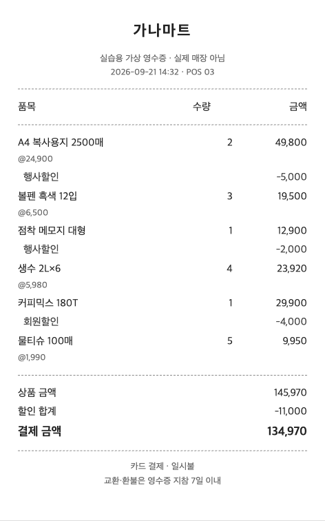

생성형 AI 특강 실습
슬라이드의 실습 번호를 따라가세요. 회색 상자는 예시 자료, 파란 상자는 AI에게 보낼 요청입니다. 복사 버튼으로 옮겨 붙이면 됩니다.
시작 전
- wrks에 로그인해 둡니다.
- 실습마다 새 채팅에서 시작합니다. 앞 실습의 대화가 섞이지 않게 하기 위해서입니다.
- 예시 자료는 모두 가상입니다. 실습에 실제 개인정보나 내부 문서는 넣지 않습니다.
실습 1 · 또렷하게 요청하기5분
같은 메일을 두 번 맡겨 요청 한 줄이 답을 얼마나 바꾸는지 봅니다.
- 아래 예시 메일을 복사해 “이 메일 어때? 검토해 줘”와 함께 보냅니다.
- 새 채팅을 열고 파란 상자의 요청과 예시 메일을 함께 보냅니다.
- 두 답을 나란히 놓고 비교합니다.
예시 메일 (가상)
원장님 안녕하십니까. 교무과 김○○입니다. 다름이 아니오라 지난번 회의에서 말씀하신 학사일정 관련해서 여러 부서의 의견을 모아보았는데 부서마다 입장이 조금씩 달라서 정리하는대 시간이 좀 걸렸습니다. 교무과는 10월 중순을 희망하고 학생과는 11월초를 원하고 있으며 기획팀은 일정보다 예산 확보가 먼저라는 의견이였습니다. 그래서 한번 모여서 논의하는게 좋을것 같은데 혹시 다음주 화요일 오후 2시에 시간 되시는지 여쭙고자 연락드렸습니다. 바쁘시겠지만 회신 부탁드립니다. 감사합니다.
요청
원장님께 보낼 메일이야. 교정·교열해 주고, 두괄식으로 썼는지도 확인해 줘.
실습 2 · AI가 묻게 하기5분
내가 다 쓰지 않고 필요한 정보를 AI가 물어보게 합니다.
- 파란 상자의 요청을 보냅니다.
- AI의 질문에 하나씩 답합니다. 날짜·과목은 지어내도 됩니다.
- 공지가 나오면 한 군데를 분명하게 고쳐 달라고 합니다.
- 마지막으로 두 번째 파란 상자를 보냅니다. 그 답이 다음번 프롬프트입니다.
요청
학생들에게 보낼 휴강 공지를 쓰려고 해. 쓰기 전에 필요한 정보를 나에게 하나씩 물어봐 줘.
마지막 요청
이 공지를 처음부터 한 번에 받으려면 어떻게 요청하면 돼?
실습 3 · 보고서 양식 분석7분
보고서를 직접 쓰기 전에 양식을 분석해 프롬프트부터 만들게 합니다.
- 아래 가상 보고서 2건을 복사해 붙여 넣고 파란 상자의 요청을 함께 보냅니다.
- AI가 되물으면 답합니다.
- 만들어진 프롬프트로 “직원 AI 특강 운영 계획(안)” 보고서를 받아 봅니다.
가상 보고서 1 · 계획(안)
2026학년도 2학기 학생상담 주간 운영 계획(안)
Ⅰ. 추진 배경
○ 학업·진로 고민으로 상담을 찾는 학생이 늘어 학기 중 집중 상담 기간 운영 필요
※ 2026학년도 1학기 상담 신청 ○○○건(전년 동기 대비 ○○% 증가)
⇒ 학기 중 1주간 상담 주간을 운영하여 상담 접근성을 높이고 조기 지원 체계 마련 필요
Ⅱ. 현황 및 문제점
□ 상담 수요 대비 상담 인력 부족
○ 상담 신청이 시험 기간 전후에 몰려 평균 대기 기간이 ○주로 길어짐
□ 학생들이 교내 상담 창구를 잘 모름
○ 재학생 설문 결과 상담실 위치·신청 방법을 모른다는 응답 ○○%
Ⅲ. 개선 방향
□ 상담 주간 집중 운영
○ 기간을 정해 상담 인력을 집중 배치하고 당일 상담 창구 운영
□ 학과 연계 안내 강화
○ 각 학과(부)에서 안내하고 통합정보시스템 신청 메뉴를 함께 안내
Ⅳ. 추진 계획
□ 예산 정보 (단위: 천원)
○ 홍보물 제작 500, 상담 운영 물품 300 / 총액 800
□ 세부 일정
○ 계획 수립 및 학과 안내(2026. 9.)
○ 상담 주간 운영(2026. 10. 12.~10. 16.)
○ 운영 결과 분석 및 보고(2026. 11.)가상 보고서 2 · 개선 방안
직원 정보보호 교육 운영 개선 방안
〈정보보안팀 김○○ 0000〉
□ 추진 배경
○ 「개인정보 보호법」에 따라 개인정보취급자 대상 정기 교육 실시 의무
○ 생성형 AI 활용이 늘어 입력 정보 관리 교육 수요 증가
□ 현황 및 문제점
○ 집합 교육 위주로 운영하여 이수율 저조
※ 2026년 상반기 이수율 ○○%(대상 ○○○명 중 ○○○명)
○ 법령 소개 중심의 교육 내용으로 실무 적용 사례 부족
□ 개선 방안
○ 집합 교육과 온라인 교육을 병행하여 이수 기회 확대
○ 생성형 AI에 넣을 정보 구분(그대로·가리고·넣지 않음) 사례를 교육 내용에 포함
* 개인정보보호위원회 「생성형 AI 서비스 이용자를 위한 개인정보 보호 가이드」(2026. 5.) 참고요청
우리 대학 보고서 양식이야. 구조, 내용 흐름, 문체를 분석해서 이런 보고서를 써 달라고 할 때 쓸 프롬프트를 만들어 줘. 모호한 부분은 임의로 정하지 말고 나에게 물어봐.
실습 4 · 영수증 정리와 검증5분
뽑는 일은 AI에게, 맞추는 일은 내가 합니다.
- 영수증 이미지를 내려받아 채팅에 첨부합니다.
- 파란 상자의 요청을 보냅니다.
- 표의 금액을 계산기로 더해 영수증의 상품 금액·할인 합계·결제 금액과 맞춰 봅니다.
- 틀린 곳이 있으면 어디가 틀렸는지 알려 주고 다시 받습니다.

요청
마트 영수증이야. 품목명, 수량, 원래 금액, 할인 금액을 표로 뽑아 줘.
이번 주 과제
강의에서 본 순서를 내 업무 하나로 한 번 돌려 봅니다.
- 개인정보가 없는 내 업무 하나를 고릅니다. 공지, 안내 메일, 회의 자료 초안 등.
- 편하게 요청하고 안 맞는 곳은 분명하게 고쳐 달라고 합니다.
- 마음에 드는 결과가 나오면 아래 요청을 보내고 그 답을 저장해 둡니다.
요청
지금까지 한 걸 다음에도 쓸 수 있게 프롬프트(지침)로 정리해 줘.
넣기 전에 확인: 공개 자료는 그대로, 사람이 드러나는 정보는 가리고, 주민번호·계좌·비공개 문서는 넣지 않습니다. 애매하면 넣지 않습니다.
참고: 개인정보보호위원회 「생성형 AI 서비스 이용자를 위한 개인정보 보호 가이드」(2026. 5.) · 국가정보원 「챗GPT 등 생성형 AI 활용 보안 가이드라인」(2023. 6.)